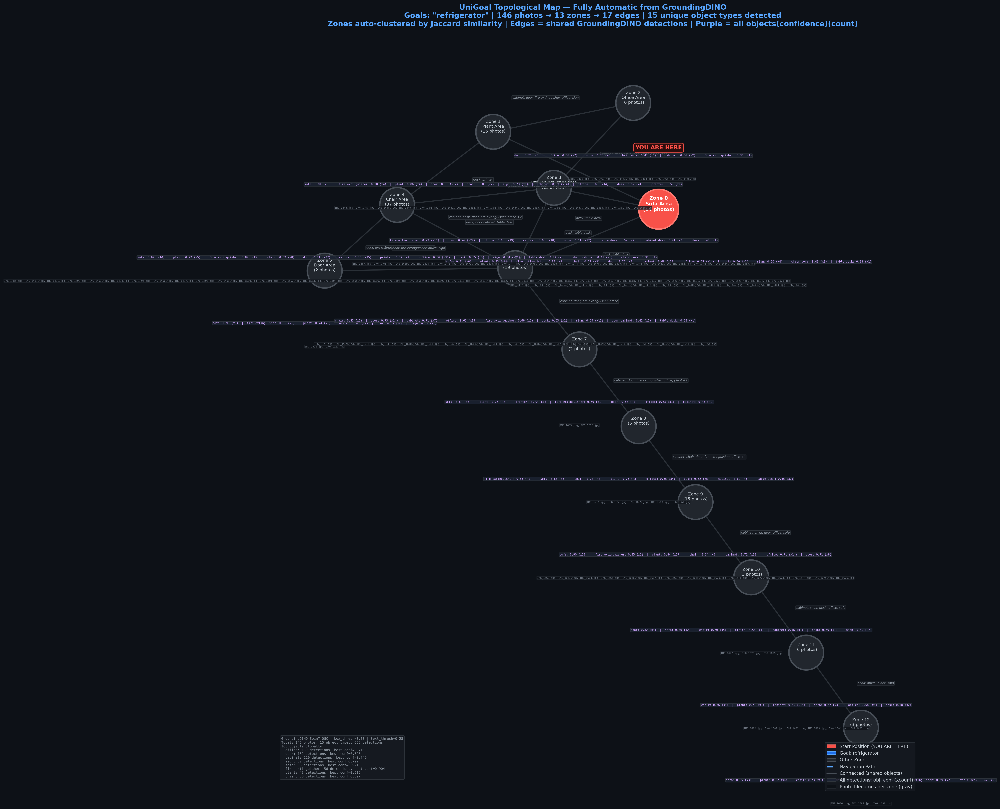

Department Office Environment Navigation Analysis Report
系辦
2026/06/08
GroundingDINO + Gemma4
The Department Office is a multi-functional academic space designed to support administrative tasks, student consultation, and faculty collaboration. The layout comprises 13 distinct zones, ranging from reception areas (Zone 0, Zone 4) to private working stations and storage areas. Key features include multiple workstations equipped with desks and chairs, communal seating (sofas), and essential safety equipment like fire extinguishers. The overall flow suggests a high degree of activity, requiring clear navigation paths.
本系辦空間是一個多功能的學術行政區域，旨在支援行政事務、學生諮詢及教職員協作。整體佈局包含 13 個獨立的活動區域，從接待區（如 Zone 0, Zone 4）到個人工作站和儲物區。主要的家具配置包括桌子、椅子、休閒沙發以及消防設備。空間流動性高，顯示出持續的活動需求，因此清晰且直觀的導航路徑至關重要。

*地圖顯示了所有區域間的空間連通性與流動路徑。建議將導航標識設置在主要交叉點。